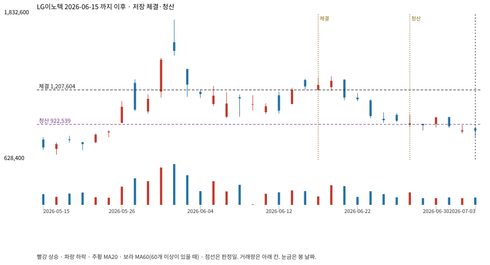

계좌를 다시 돌리지 않았다. 아래는 저장된 주문·체결·청산·비용·손익이다.

{
"case_id": "6576eb9e933faa21",
"status": "closed",
"trade": {
"symbol": "011070.KS",
"signal_date": "2026-06-15",
"quantity": 3,
"entry": 1209000,
"stop": 933457,
"target": 1788000,
"planned_risk": 834455.1563144991,
"reserved_cash": 3630626.9999999995,
"fill": {
"date": "2026-06-17",
"price": 1207603.5,
"fee": 3622.8105
},
"exit": {
"date": "2026-06-26",
"price": 922538.5,
"reason": "stop",
"net_pnl": -861585.4259999995,
"ambiguous_bar": false
}
},
"cost": "research fee 10bp each side, slippage 5bp; amounts below are the stored ledger, not a new run",
"chart": "c\/6576eb9e933faa21.svg"
}